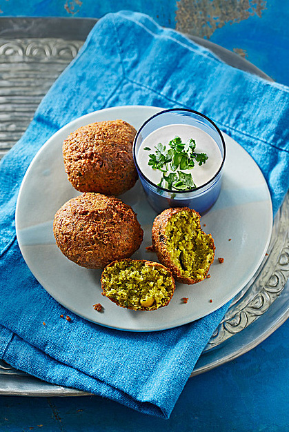

Falafel

Zutaten:
- 250 g Kichererbsen, getrocknet
- 3 Knoblauchzehe(n)
- 1 Handvoll Petersilie
- 1 Handvoll Koriandergrün
- 1 Chilischote(n), entkernt
- 2 EL Mehl
- 1 TL Backpulver
- 1 TL Kreuzkümmel, gemahlen
- 1 TL Koriander, gemörsert
- etwas Ingwer, nur nach Belieben
- 1 EL Salz
Pfeffer
- Öl, zum Frittieren
Zubereitung:
-
Kichererbsen über Nacht in reichlich Wasser quellen lassen. Quellwasser abgießen, Kichererbsen zu Mus pürieren.
-
Andere Zutaten (Knoblauch, Petersilie, Koriander, Chili, plus 2 EL vom Kichererbsenmus) pürieren. Diese grüne Masse zum restlichen Mus hinzufügen, mit Mehl, Cumin, Koriandersamen, Backpulver, Salz und frisch gemahlenem Pfeffer vermengen. Eventuell etwas Wasser zugeben, wenn die Masse zu trocken ist.
-
Falafel-Bällchen formen, tischtennisballgroß. Diese Bällchen kann man zugedeckt 1 Tag im Kühlschrank aufbewahren.
-
Falafel-Bällchen im Frittieröl 2-3 min gleichmäßig goldbraun ausbacken. Sie sollten außen knusprig, innen jedoch noch weich sein. Auf Küchentuch abtropfen lassen.
Links:
Quelle: http://www.chefkoch.de/rezepte/1985171321890621/Falafel-mit-Tahini-Sauce.html
Zurück zum Inhaltsverzeichnis
{kind=link}